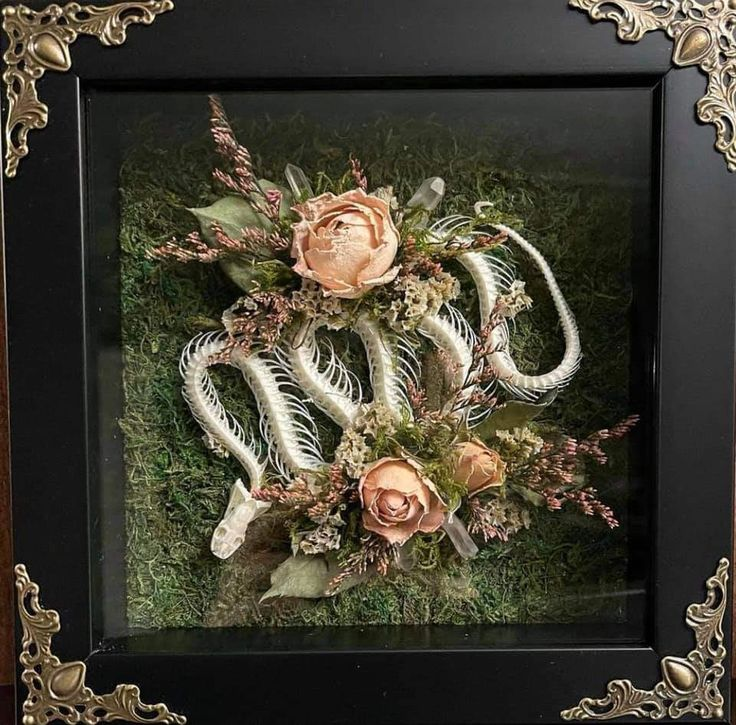
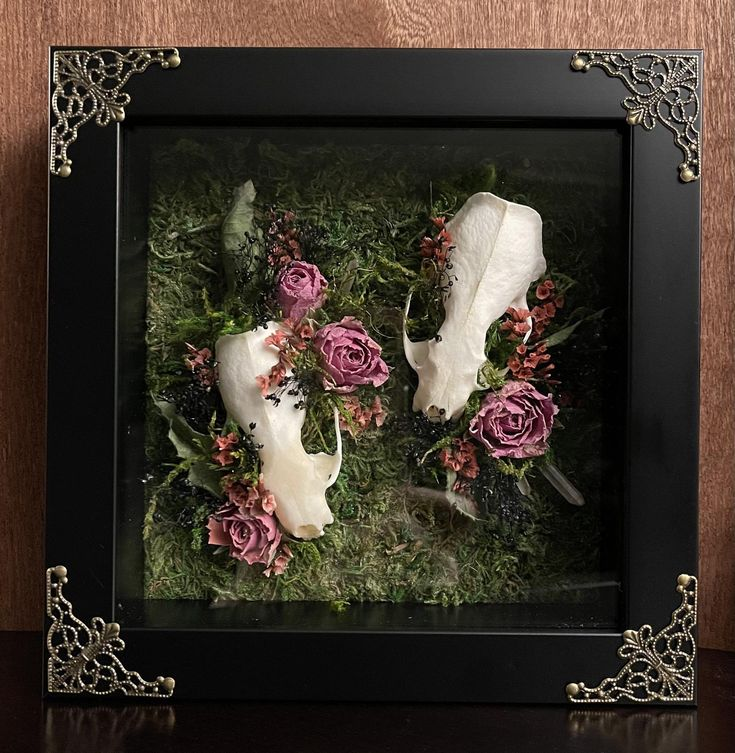
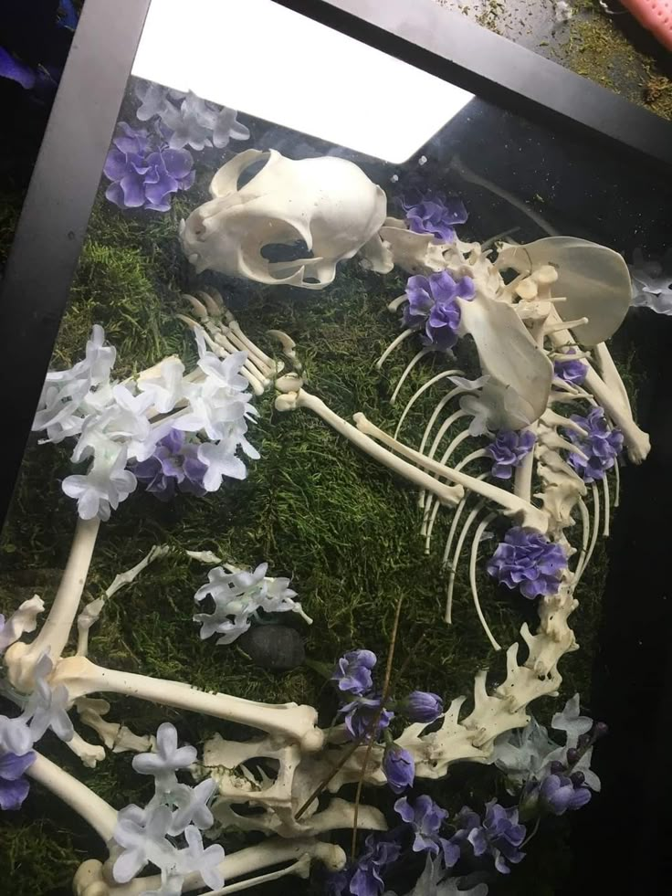
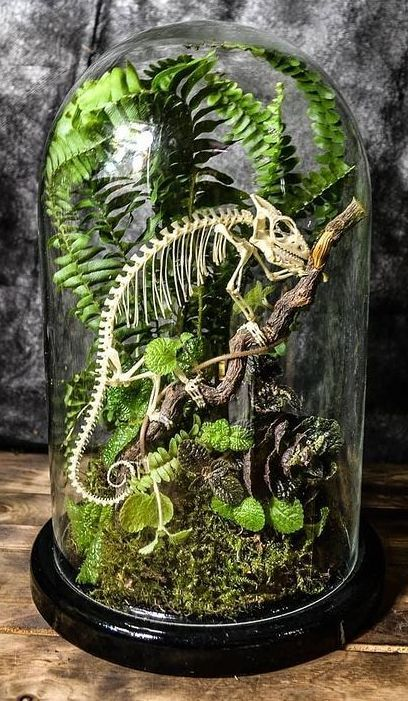
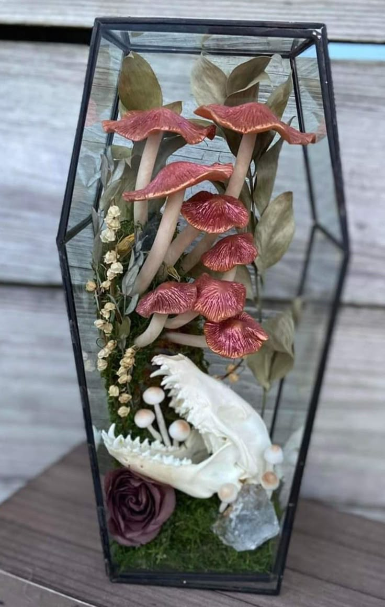

Our Memorial Work
At Brittle Bones Preservations, the memorial side of our work is handled with the utmost reverence and empathy. We understand that losing a beloved pet is incredibly difficult, and we are dedicated to transforming that loss into a tangible, beautiful tribute. Our specialized bone taxidermy offers a unique alternative to traditional memorials, allowing us to respectfully clean, prepare, and articulate your companion's skeletal remains. Each memorial piece is a custom collaboration, designed to reflect the pet's spirit—whether it is an articulated display of their full form, or an elegant arrangement of a specific bone set within an artistic tableau of crystals and botanicals. This process is deeply meaningful; it preserves the actual architecture of your cherished friend, giving you a lasting, dignified, and unique piece of art that honors their life and keeps their presence eternal.

This shadow box, titled "Coiled Rest," is a poignant example of how we transform a beloved pet's remains into a timeless piece of art and remembrance. Within the ornate, dark frame, the delicate, articulated skeleton of a snake is gracefully coiled and nestled onto a soft bed of moss. The bones are beautifully accentuated by soft, dried pink roses, natural foliage, and slender quartz crystals, symbolizing eternal rest and serenity. This custom piece captures the elegance of the snake's form in a respectful, peaceful arrangement, providing a deeply personal and meaningful tribute to a cherished companion.

This exquisite shadow box, titled "Dual Harmony," provides a deeply personal and beautiful way to commemorate a cherished bond, often representing two beloved companions. Within the ornate frame, two small, respectfully cleaned animal skulls are artfully arranged upon a bed of lush green moss. Each skull is accented by delicate clusters of dried magenta roses and dark foliage, symbolizing enduring love and perpetual rest. The composition perfectly balances the raw elegance of the bone structure with the soft, eternal beauty of the florals, creating a powerful and dignified tribute that forever holds the memory of your loved ones close.

This deeply moving piece, "Eternal Slumber," offers the ultimate tribute to a beloved pet, preserving their full form within a respectful shadow box. The delicately articulated skeleton and skull rest peacefully upon a bed of vibrant green moss, symbolizing comfort and the returning to earth. The form is artfully adorned with clusters of serene purple and white florals, transforming the remains into a poignant, beautiful scene that honors the entire life and physical structure of your cherished companion. This memorial serves as a powerful, permanent testament to the enduring love you shared.

This stunning piece, "The Timeless Terrarium," offers a captivating and unique way to honor a smaller companion, like a lizard or reptile. Encased beneath a clear glass dome, the meticulously articulated skeleton is posed naturally, climbing a preserved branch within a lush, living-style landscape of vibrant green moss and ferns. This memorial piece not only preserves the complete anatomical structure of your beloved pet but also encapsulates their spirit within a beautiful, self-contained ecosystem, symbolizing the continuity of life and nature's enduring elegance.

This profoundly unique piece, the "Forest Slumber Casket," offers a distinctive and meaningful memorial for a cherished pet. Housed within an elegantly shaped glass display, a meticulously preserved animal skull rests on a soft bed of moss, beautifully integrated with a striking cluster of vibrant, red-capped mushrooms, subtle dried florals, and natural crystal elements. This artistry embraces themes of life, decomposition, and enduring connection, transforming remembrance into a bold, beautiful statement piece that honored this customer's companion's memory with deep respect and a touch of the mystical forest.
We hope these examples have offered a glimpse into the depth of care, artistry, and respect we bring to every memorial piece at Brittle Bones Preservations. Each creation is a deeply personal journey, reflecting the unique bond you shared with your cherished companion. If you feel a connection to our work and envision a custom tribute that honors your pet's memory in a truly special way, we invite you to take the next step. Please visit our Business Inquiries page to share your vision, discuss possibilities, and begin the process of crafting an eternal legacy for your beloved friend. We are here to listen and guide you through every detail.